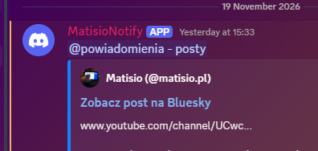
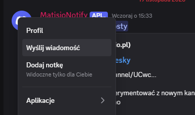
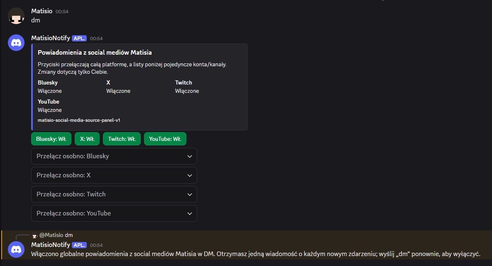

MatisioNotify
czyli dostawanie powiadomień o nowych postach/filmach/streamach od matisia :)
Jak dodać bota żeby wysyłał wiadomości na dm (priv)?
1. Dołącz na ten serwer
2. Wejdź na ten kanał
3. Kliknij prawym przyciskiem myszy na nazwe bota lub jego profilowe

4. Kliknij w "Wyślij wiadomość"

5. Napisz do bota "dm"

Gotowe